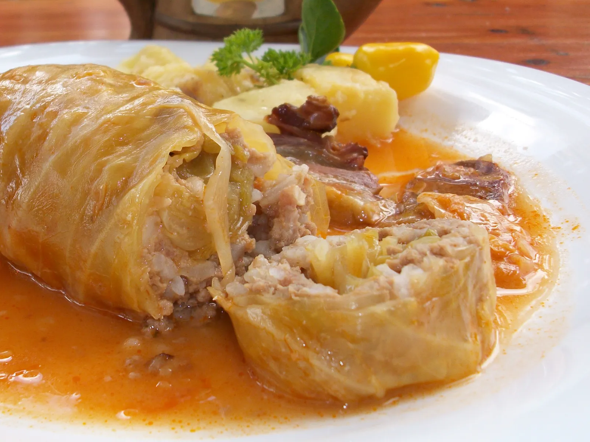

Home
Sarma

Description
Sarma is a hearty, traditional dish whose name comes from the Turkish word
sarmak, meaning "to wrap" or "to roll." At its core, Sarma consists of
tender sour cabbage leaves (pickled cabbage) that are rolled around a
delicious filling of minced meat (usually a blend of beef and pork), rice,
and spices.
The key to Sarma's rich, complex flavor is the slow cooking process. The
rolls are layered tightly in a large pot, often interspersed with smoked
meat (such as smoked ribs, bacon, or hock), and then left to simmer for
several hours. This extended cooking time allows the tangy sourness of the
cabbage to mellow and blend deeply with the richness of the meat and the
smoky flavors.
Sarma is considered the ultimate comfort food, particularly cherished
during the winter months and major holidays. It is a dish that is deeply
embedded in regional culinary tradition, and many claim it tastes even
better the day after it is cooked, as the flavors have more time to fully
marry and intensify.
Ingredients
- 1 large head of sour/pickled cabbage (yields about 15–20 leaves)
- 500 g minced meat (mixed beef and pork)
- 100 g rice (short-grain, rinsed)
- 1 large onion, finely chopped
-
200 g smoked meat (ribs, bacon, or hock – for flavoring the broth)
- 2 tbsp sweet paprika
- Oil, salt, pepper
- Water or broth
Preparation & Wrapping
-
Prepare the Filling: Sauté the chopped onion in oil until soft. Add the
minced meat and cook until it changes color.
-
Stir in the rinsed rice, paprika, salt, and pepper. Mix briefly and
remove from heat.
-
Prepare Cabbage Leaves: If the leaves are too salty, rinse them under
cold water. Use a knife to shave down the thick central vein of each
leaf to make it easier to roll. Chop up the leftover, unusable pieces of
cabbage for the bottom of the pot.
-
Wrap the Sarma: Place a spoonful or two of the meat mixture onto each
leaf (depending on the size). Fold the sides of the leaf inward, and
then roll it tightly away from you.
-
Spread a thin line of the cheese filling along the long edge of the top
sheet.
Cooking (The Simmer)
-
Layer the Pot: Line the bottom of a large pot with the chopped cabbage
remnants. Place the smoked meat over the cabbage base.
-
Arrange Rolls: Pack the sarma rolls tightly into the pot, ensuring they
are snug. This prevents them from unrolling during cooking.
-
Cover and Simmer: Cover the rolls with the remaining cabbage scraps, if
any. Pour in cold water or broth until the liquid completely covers the
sarma.
-
Place a small plate or saucer on top of the rolls to weigh them down.
-
Bring to a boil, then reduce the heat to very low and simmer for 3 to 4
hours, or until the meat is completely tender and the flavors are fully
developed.